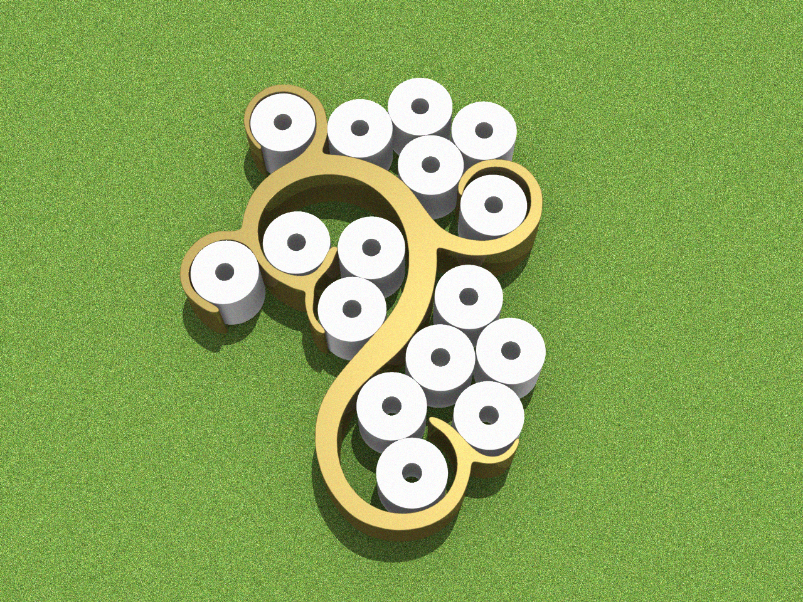

This project is about making a smart toilet paper holder. It is a smart shelve type of product. Smart toilet paper holder will remove the activity of toilet paper shopping from millions of peoples lives. It will make the life of elderly people much easier as there is one less thing to worry about. When detecting a low number of paper rolls, it automatically orders new patch toilet paper from distributor of choice. Therefore, removing an annoying task from our life.
The smart toilet paper holder will eliminate carrying bulky toilet paper bags while doing weekly groceries shopping. Instead it gets delivered to your when the number is running low with rideshare service or a courier service.
There are roughly 10 million dwellings in Australia, and very few truly enjoy shopping for toilet paper.
Using Raspberry Pi`s and couple of sensors it is quite easy to develop that kind of system.
The product will include built in Raspberry Pi equipped with wireless connectivity module. When possible, with Wi-Fi, if not available a 3G/4G card can be added. The product has got sensors to detect the number of toilet paper rolls. It will be plugged in to a permanent power source to eliminate the risk of battery running low but will include an internal battery for system protection. The sensors will be proximity sensors or optical sensor type.
Toilet papers are placed on the holder. Bottom row has got sensor where the rolls sit. When the paper roll is taken off the sensor it makes the sensor change its value.
This lets the program know the remaining number of rolls. Depending on the delivery time, location, weekday and paper usage, speed the program can be personalised and optimised.
When toilet paper count goes under certain set threshold it activates a notification function.
Message is sent to customers phone to confirm the new order. When approved the program will send a purchase request to a supplier. Once the order has gone through the package will be sent to the user.

back to main page